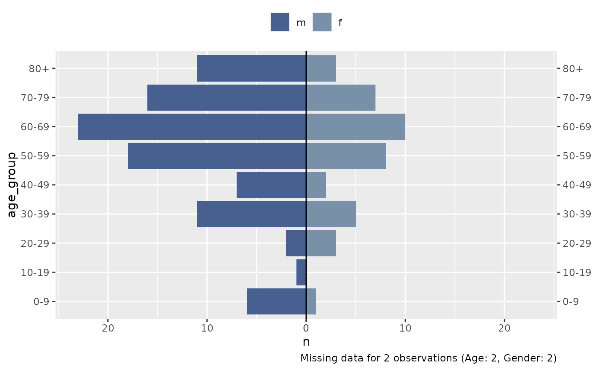

Plot Age/Sex Pyramids
Usage
plot_pyramid(
df,
age_col,
gender_col,
gender_levels,
facet_col = NULL,
make_age_groups = TRUE,
age_breaks = c(seq(0, 80, 10), Inf),
age_labels = label_breaks(age_breaks),
drop_age_levels = FALSE,
gender_labs = NULL,
x_lab = waiver(),
y_lab = waiver(),
colours = c("#486090FF", "#7890A8FF"),
show_data_labs = FALSE,
lab_size = 4,
lab_in_col = "white",
lab_out_col = "grey30",
lab_nudge_factor = 5,
facet_nrow = NULL,
facet_ncol = NULL,
facet_scales = "fixed",
facet_labs = label_wrap_gen(width = 25),
facet_lab_pos = "top",
add_missing_cap = TRUE
)Arguments
- df
un-aggregated dataframe with a minimum of age and gender variables.
- age_col
age variable name in
df. Can be either a numeric vecotr of ages or a character/factor vector of age groups.- gender_col
gender variable name in
dfwith levels indicating male or female.- gender_levels
length 2 character vector with male and female level in
gender_col, respectively.- facet_col
optional faceting variable name to split chart into small multiples.
- make_age_groups
set to TRUE (default) if
age_colis numeric and needs to be binned into groups.- age_breaks
breaks to be used for binning a numerical
age_col.- age_labels
break labels to accompany
age_breaks. Defaults toepivis::label_breaks(age_breaks).- drop_age_levels
should age groups with no observations be removed from the chart? Defaults to FALSE.
- gender_labs
optional labels for
gender_levels- x_lab
optional label for the X axis.
- y_lab
optional label for the Y axis.
- colours
length 2 character vector of colours used for male and female, respectively.
- show_data_labs
show data labels on chart? Defaults to FALSE.
- lab_size
data labels size.
- lab_in_col
data label colour when placed inside a bar.
- lab_out_col
data label colour when placed outside a bar.
- lab_nudge_factor
threshold for moving a data label outside a bar. Defaults to 5. Increasing the number increases the distance from the max value required to move a label outside the bar.
- facet_nrow
nrow argument passed to
ggplot2::facet_wrap.- facet_ncol
ncol argument passed to
ggplot2::facet_wrap.- facet_scales
facet scales argument passed to
ggplot2::facet_wrap. Should scales be fixed ("fixed", the default), free ("free"), or free in one dimension ("free_x", "free_y")?- facet_labs
facet labeller argument passed to
ggplot2::facet_wrap. Defaults toggplot2::label_wrap_gen(width = 25).- facet_lab_pos
facet label position argument passed to strip.position in
ggplot2::facet_wrap. Defaults to "top". Options arec("top", "bottom", "left", "right").- add_missing_cap
show missing data counts for
age_colandgender_col? Defaults to TRUE.
Examples
suppressMessages(library(dplyr))
df_flu <- outbreaks::fluH7N9_china_2013
plot_pyramid(
df = df_flu,
age_col = age,
gender_col = gender,
gender_levels = c("m", "f")
)
